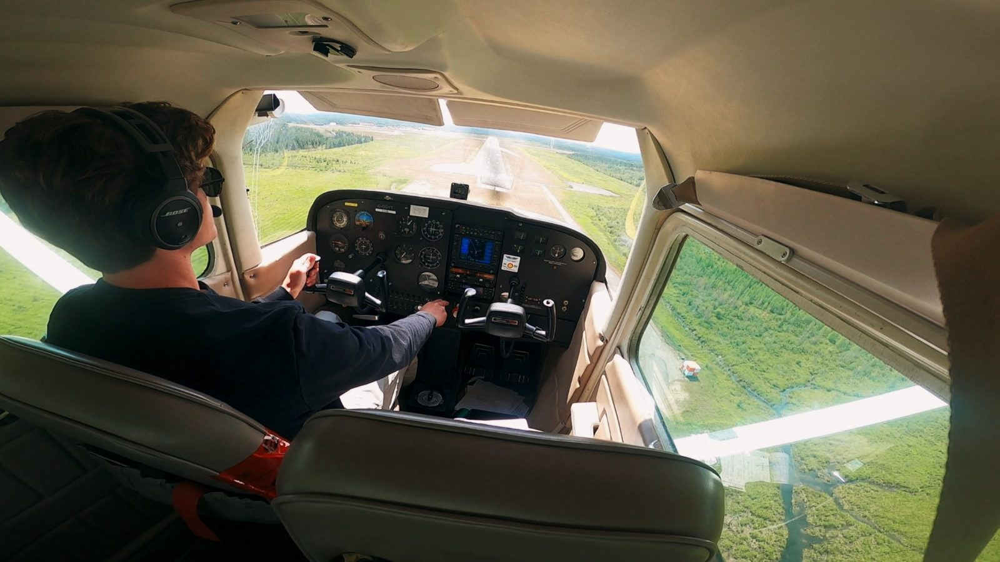

Aviation

Commercial pilot since August 2026, trained through a three-year aviation diploma at Fanshawe College. Every flight starts with a structured assessment of the weather, the aircraft and the pilot.
Licences & ratings
- Commercial Pilot Licence, Aug 2026
- Night Rating, Nov 2024
- Radio Operator's Certificate
- Category 1 Medical
Training
- Advanced Diploma, Commercial Flight & Aviation
- Fanshawe College, 2021–2024
- 220 hours total time
Aircraft flown
- Cessna 172
- Diamond DA20
- Piper PA-34 Seneca
Airmanship
Every flight is planned before engine start: route, weather, NOTAMs, fuel, weight and balance, and aircraft performance for the day's conditions.
Hazards are weighed before and during each flight, from weather and terrain to fatigue and aircraft condition, against set personal minimums for a clear go or no-go decision.
Checklists, standard procedures and clear radio calls on every flight, grounded in safety management systems and human factors training.
Safe flying and efficient flying go together: short, direct routes planned around winds aloft and airspace, cruise power and mixture set for conservative fuel use, and no wasted time on the ground or in the air.
The aircraft is understood as one integrated unit: how the engine, fuel, electrical, flight controls and avionics depend on each other, so an abnormal indication can be traced to its cause.
220 hours including night flying, building to a Commercial Pilot Licence: precise handling, navigation and decision-making under workload.
Training path
- 2021 – 2024
Advanced Diploma, Commercial Flight & Aviation
Fanshawe College, London, ON. Flight training alongside aviation theory, human factors and safety management.
- Mar 2022
Private Pilot Licence
First licence, alongside the Radio Operator's Certificate.
- Nov 2024
Night Rating
Night VFR operations.
- Aug 2026
Commercial Pilot Licence
220 hours total time, with a Category 1 medical.